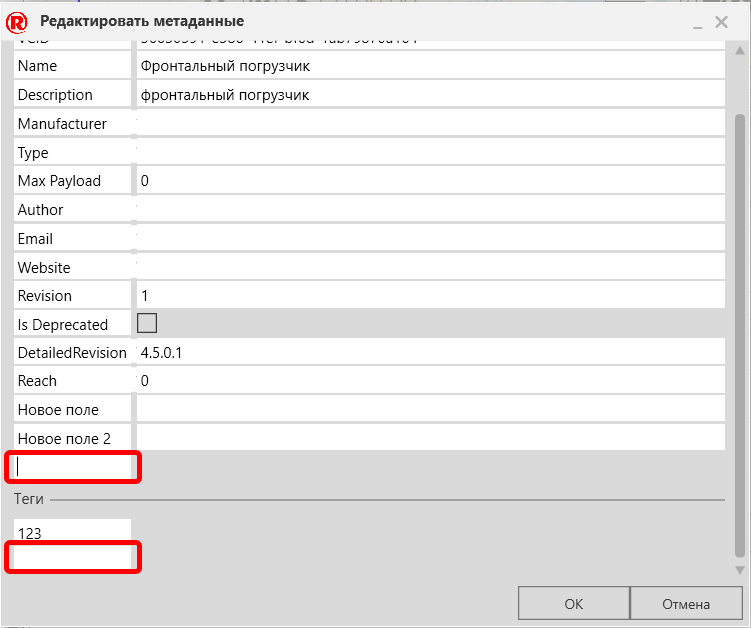

Просмотр и Редактирование метаданных |
|
Каждый объект содержит метаданные, которые вы можете просматривать и редактировать на панели каталога. В панели Каталога, щелкните коллекцию или источник. 1.В области Отображение щелкните элемент правой кнопкой мыши и выполните одно из следующих действий: ·Если элемент получен из удаленного источника или из поддерживаемого файла, нажмите Просмотр метаданных. ·Если элемент получен из локального источника, а не из поддерживаемого файла, нажмите Изменить метаданные. 2.Если элемент получен из местного источника, выполните одно или все из следующих действий: ·Чтобы добавить свойство, в разделе Основные поля, нажмите на пустое поле, а затем введите имя и значение, которое вы хотите присвоить этому свойству. ·Чтобы отредактировать свойство, найдите свойство, которое хотите изменить и щелкните на него, а затем введите или вставьте новое значение. ·Чтобы удалить добавленное свойство, найдите свойство, которое хотите удалить, и щелкните левое поле с Наименаванием свойства, а затем очистите это поле. ·Чтобы добавить тег, в разделе Теги, щелкните на поле, а затем введите или вставьте тег. ·Чтобы отредактировать тег, в разделе Теги, найдите тег, который хотите изменить, затем щелкните поле тега, а затем введите или вставьте новое значение. ·Чтобы удалить добавленный тег, в разделе Теги, найдите тег, который хотите удалить, затем щелкните поле тега, а затем очистите поле.
 |